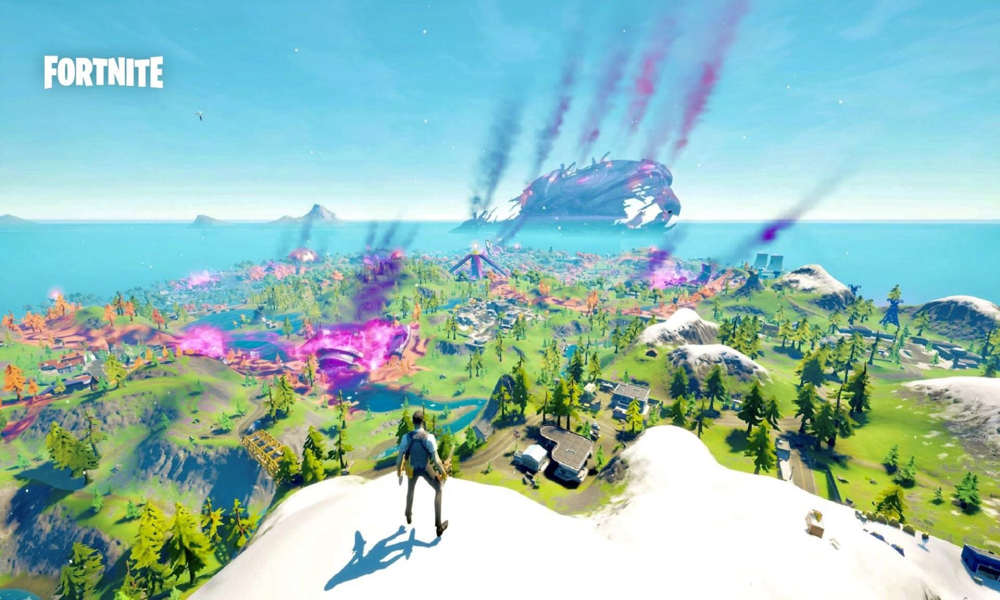

GameTips
Reuni aqui dicas que eu gostaria de ter recebido quando comecei a jogar. Tem de tudo um pouco: história, exploração, RPG, jogos tranquilos e aqueles que testam a paciência. Escolhe o seu e bora jogar.
Bora ver as dicasQual jogo você quer?
São 39 jogos por aqui. Procura pelo nome ou escolhe um estilo pra achar o próximo.
Mostrando 14 jogos

Fortnite
Aprenda a construir, se mexer rápido e sobreviver além dos primeiros minutos.
Ver dicas →
God of War
Como lutar melhor, evoluir o Kratos e não deixar nada importante passar.
Ver dicas →
Red Dead Redemption 2
Um mundo aberto enorme e cheio de detalhes. Veja por onde começar.
Ver dicas →
The Last of Us
Munição curta e inimigos perigosos: dicas pra sobreviver com calma.
Ver dicas →
Elden Ring
Um mundo gigante, chefes exigentes e a liberdade de ir por outro caminho.
Ver dicas →
Cyberpunk 2077
Conheça Night City e descubra por onde começar sem se perder.
Ver dicas →
The Witcher 3
Contratos, personagens marcantes e escolhas que não são tão simples.
Ver dicas →
Hollow Knight
Um reino subterrâneo cheio de segredos e caminhos escondidos.
Ver dicas →
Stardew Valley
Plante, pesque e construa sua rotina sem precisar correr.
Ver dicas →
Baldur's Gate 3
Crie seu personagem e encontre soluções que nem imaginava.
Ver dicas →
Hades
Cada tentativa revela uma surpresa e um pedaço novo da história.
Ver dicas →
Sekiro
Um jogo em que aprender o ritmo faz toda a diferença.
Ver dicas →
Hogwarts Legacy
Aulas, magia e muita coisa escondida nos corredores de Hogwarts.
Ver dicas →
Terraria
Cave, construa e descubra como seu mundo pode crescer.
Ver dicas →
Portal 2
Uma sala, dois portais e aquele momento em que tudo faz sentido.
Ver dicas →
Half-Life 2
Um clássico de ficção científica que conta muita coisa pelo cenário.
Ver dicas →
Left 4 Dead 2
Um jogo cooperativo em que ficar junto do grupo muda tudo.
Ver dicas →
Counter-Strike 2
Mapas, equipe e partidas para aprender a cada rodada.
Ver dicas →
Dota 2
Heróis diferentes e muita estratégia para aprender no seu ritmo.
Ver dicas →
Grand Theft Auto V
Los Santos tem tanta coisa acontecendo que explorar já rende história.
Ver dicas →
Resident Evil 4
Um clássico recriado, com tensão, exploração e segredos pelo caminho.
Ver dicas →
Resident Evil 2
A delegacia é um quebra-cabeça enorme e cheio de pistas.
Ver dicas →
DOOM Eternal
Ficção científica em ritmo acelerado, com fases para explorar.
Ver dicas →
Subnautica
Um oceano alienígena lindo e cheio de lugares misteriosos.
Ver dicas →
No Man's Sky
Planetas, naves e a vontade de conhecer só mais um lugar.
Ver dicas →
Slime Rancher
Uma fazenda cheia de slimes e pequenas descobertas.
Ver dicas →
Celeste
Uma montanha, muitos pulos e uma jornada que vale a pena.
Ver dicas →
Cuphead
Visual de desenho antigo e desafios que pedem paciência.
Ver dicas →
Ori and the Will of the Wisps
Florestas lindas, exploração e uma história emocionante.
Ver dicas →
Undertale
Um RPG em que conversar e escolher fazem toda a diferença.
Ver dicas →
Disco Elysium
Uma investigação cheia de diálogos e possibilidades.
Ver dicas →
DAVE THE DIVER
Mergulho de dia, restaurante à noite. A rotina surpreende.
Ver dicas →
Factorio
Uma esteira vira uma fábrica enorme antes de você perceber.
Ver dicas →
Satisfactory
Construa fábricas em 3D e organize suas ideias pelo caminho.
Ver dicas →
Civilization VI
Só mais um turno... até você descobrir outra estratégia.
Ver dicas →
Euro Truck Simulator 2
Pegue a estrada: aqui, a viagem é boa parte da diversão.
Ver dicas →
Monster Hunter: World
Aprender o ecossistema é metade da aventura.
Ver dicas →
Dark Souls III
Castelos, caminhos escondidos e a sensação de melhorar aos poucos.
Ver dicas →
Skyrim Special Edition
Você sai para uma missão e acaba descobrindo outras dez.
Ver dicas →Nenhum jogo encontrado. Tenta outro nome ou filtro.
Sobre o projeto
O GameTips nasceu como meu Trabalho de Conclusão de Curso. Escolhi jogos que eu [joguei / conheço / gosto] e juntei dicas simples, pra quem está começando ou quer jogar com mais tranquilidade. [Se quiser: conte aqui por que escolheu esse tema.]